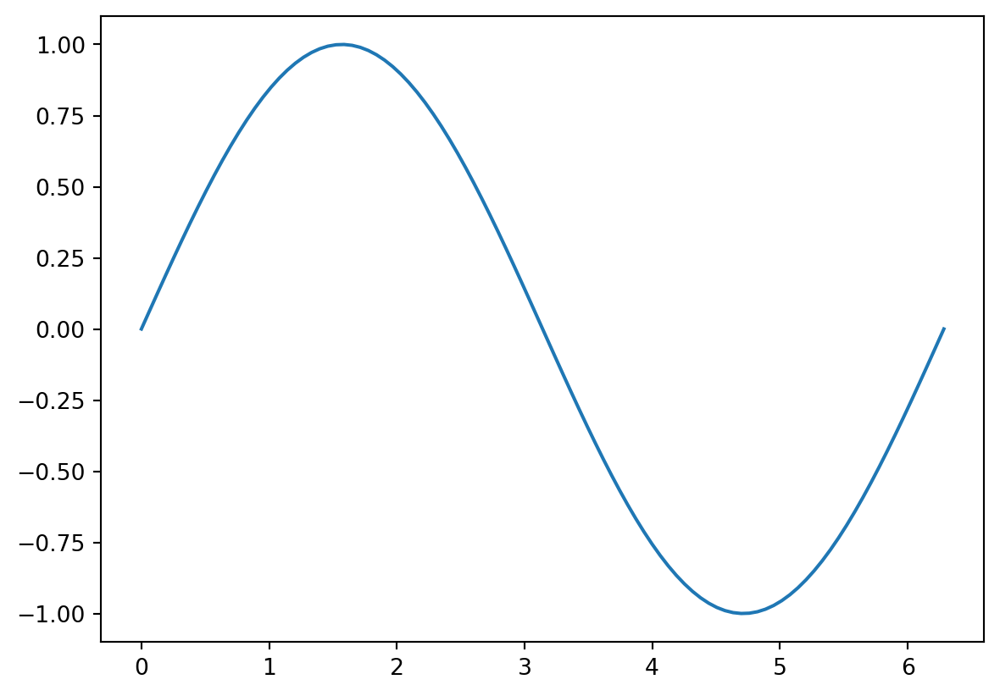
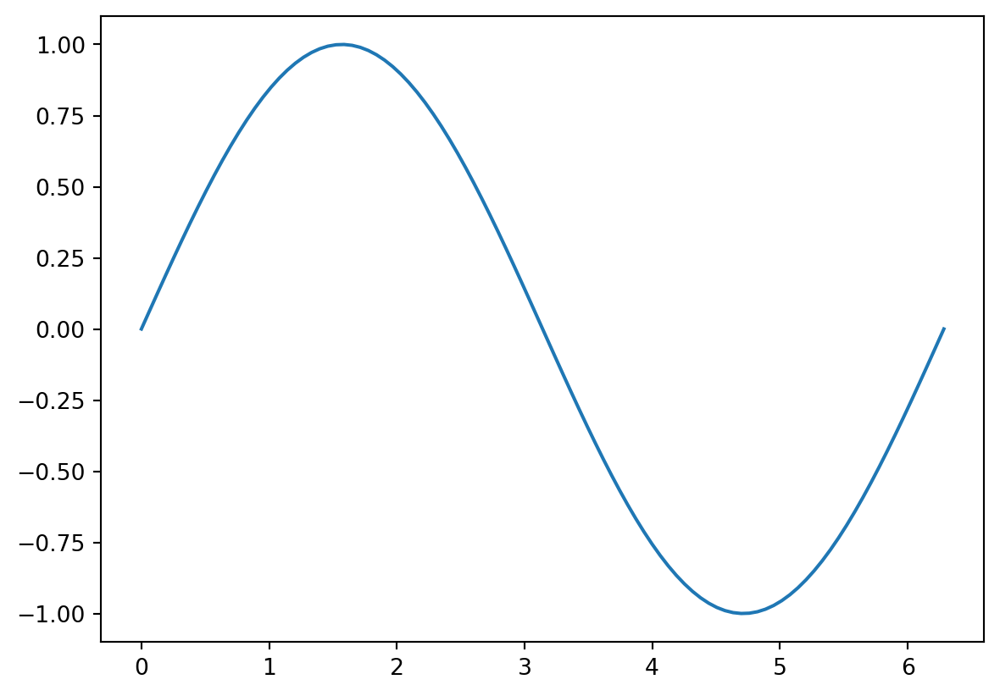

Code
import matplotlib.pyplot as plt
import numpy as np
# make an example plot
x = np.linspace(0, 2*np.pi, 100)
y = np.sin(x)
plt.plot(x, y)
TODO: abstract
import matplotlib.pyplot as plt
import numpy as np
# make an example plot
x = np.linspace(0, 2*np.pi, 100)
y = np.sin(x)
plt.plot(x, y)
This section is just exemplary. Figure 1 shows an example plot.
ChatGPT: write a blog article in markdown about “Uncertainty-Based Offline Reinforcement Learning with Diversified Q-Ensemble”
Reinforcement learning (RL) is a powerful tool for solving complex decision-making problems in a wide range of fields, including robotics, finance, and game AI. However, one major challenge in RL is how to effectively learn from limited data. Offline RL addresses this challenge by allowing RL agents to learn from previously collected data, rather than through trial-and-error interactions with the environment.
In this article, we will discuss a recent approach to offline RL called “Uncertainty-Based Offline Reinforcement Learning with Diversified Q-Ensemble” (UOFRL-DQE). This approach addresses the problem of limited data by leveraging uncertainty estimates to guide the learning process and by creating a diverse ensemble of Q-functions to improve the robustness of the learned policy.
In RL, an agent interacts with an environment and learns to take actions that maximize a cumulative reward signal. The agent’s decision-making process is guided by a Q-function, which estimates the expected reward for taking a given action in a given state. In offline RL, the agent is trained on a dataset of transitions (state, action, reward, next state) collected from past interactions with the environment.
One major challenge in offline RL is the problem of distributional shift, which occurs when the distribution of states and actions encountered during training is different from the distribution encountered during deployment. This can lead to poor performance of the learned policy.
UOFRL-DQE addresses the problem of distributional shift by creating a diverse ensemble of Q-functions. Each Q-function in the ensemble is trained on a different subset of the training data, and the ensemble is used to estimate the Q-value of a given state-action pair.
In addition to creating a diverse ensemble, UOFRL-DQE also leverages uncertainty estimates to guide the learning process. The approach estimates the uncertainty of the Q-value estimates by measuring the variance of the Q-values across the ensemble. The agent then prioritizes learning from transitions with high uncertainty, in order to improve the overall performance of the learned policy.
The effectiveness of UOFRL-DQE has been evaluated in a variety of tasks, including robotic manipulation and game playing. The results have shown that UOFRL-DQE is able to effectively leverage uncertainty estimates and the diversity of the ensemble to improve the robustness of the learned policy, leading to better performance in comparison to other offline RL methods.
Uncertainty-Based Offline Reinforcement Learning with Diversified Q-Ensemble (UOFRL-DQE) is a powerful approach to offline RL that addresses the problem of limited data by leveraging uncertainty estimates and creating a diverse ensemble of Q-functions. The approach has been shown to be effective in a variety of tasks and has the potential to significantly improve the performance of RL agents in real-world applications.